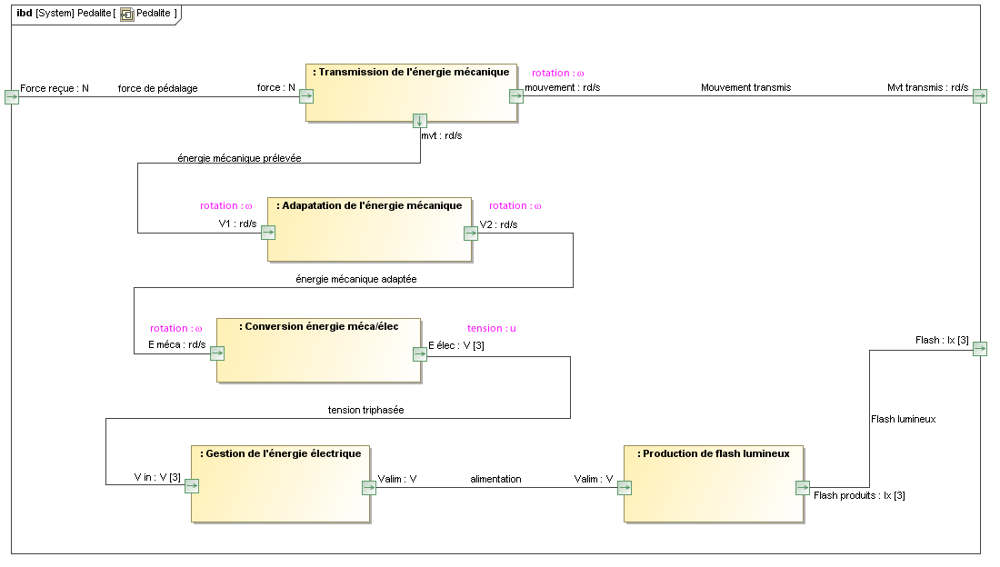

DIAGRAMME DE BLOC INTERNE
Le diagramme ci dessous présente la composition et l'interconnexion des parties de la pédale lumineuse KPL200

Pour répondre aux questions suivante, consultez la rubrique constitution interne.
Donner la liste des éléments réels faisant partie du bloc "Adaptation de l'énergie mécanique".
Donner le type de mouvement en entrée et en sortie de ce bloc ; justifier.
o Le nom du bloc constitué de la génératrice (6).
o Le type d’action réalisé par la génératrice.
o En vous aidant du chapitre « ressources diverses » justifier la notation des tensions (V[3]) utilisée pour le port de sortie du bloc
o Le nom de l'élément réel qui comporte les parties "Gestion de l'énergie électrique" et "Production de flash lumineux".
Created with the Personal Edition of HelpNDoc: Generate EPub eBooks with ease